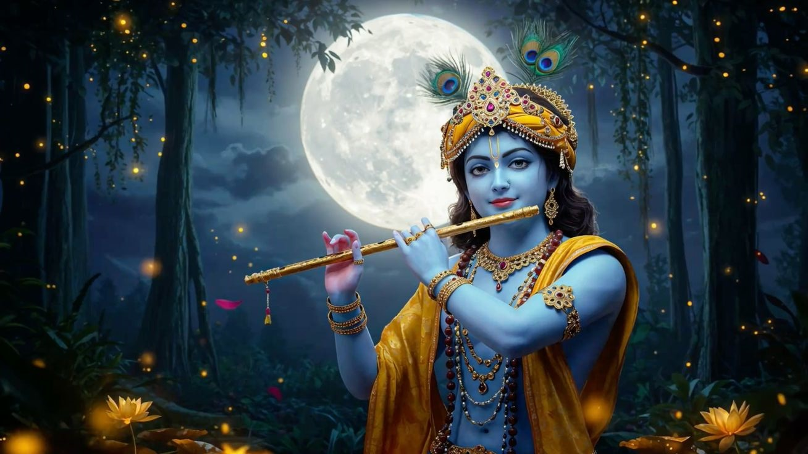
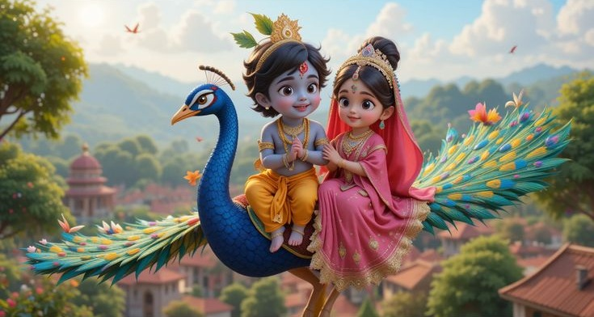
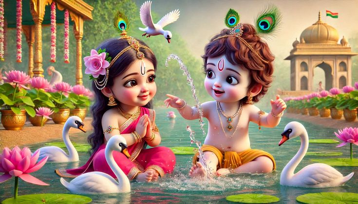
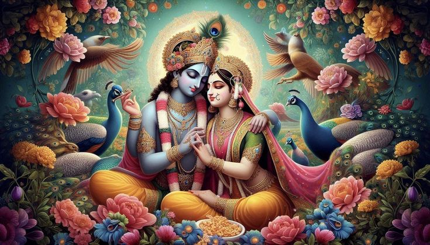
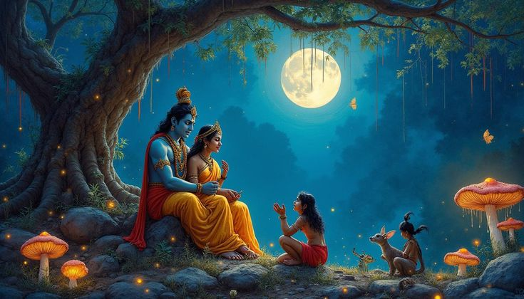
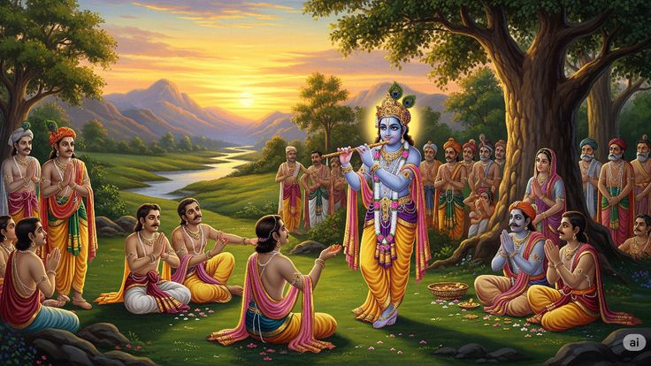
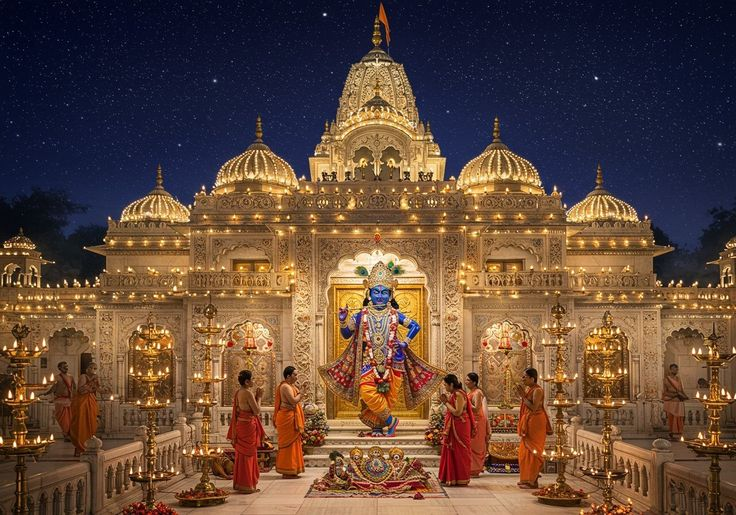
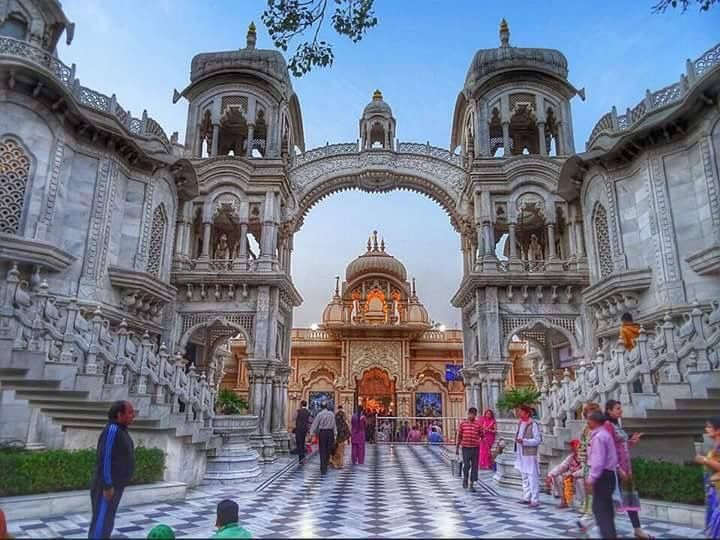

The saga of Radha and Krishna is a celestial narrative that transcends time, embodying the eternal bond between the human soul and the divine. Radha, a devoted cowherd girl from the pastoral village of Vrindavan, and Krishna, the eighth incarnation of Lord Vishnu, shared a love that was both earthly and divine. Their story, vividly described in the *Bhagavata Purana* and Jayadeva’s *Gita Govinda*, is a cornerstone of Hindu spirituality.
In the moonlit groves of Vrindavan, Krishna’s enchanting flute melodies drew Radha and the gopis into the divine Raas Leela, a dance of cosmic unity. Their love was not bound by worldly constraints but was a profound expression of Bhakti, where Radha’s selfless devotion symbolized the soul’s surrender to the divine. Krishna’s playful yet profound affection reflected the divine’s embrace of the devotee.
Their love story is a metaphor for the soul’s longing for union with God. Radha’s intense devotion, despite never marrying Krishna, inspired poets like Surdas and Mirabai to compose verses that capture the essence of divine love. Their bond continues to resonate as a symbol of spiritual purity and eternal connection.



Timeline of Their Divine Journey
Birth of Krishna (circa 3228 BCE)
Born in Mathura to Devaki and Vasudeva, Krishna’s divine birth in a prison cell marked the advent of his mission to slay the tyrant Kansa and restore dharma.
Radha’s Devotion in Vrindavan
In Vrindavan, Radha’s love for Krishna blossomed as she responded to his flute, becoming his eternal consort in the realm of divine love.
The Raas Leela
Krishna’s divine dance with Radha and the gopis under Vrindavan’s full moon symbolized the unity of the soul with the divine, immortalized in scriptures.
Krishna’s Departure to Mathura
Krishna left Vrindavan to fulfill his destiny, leaving Radha in eternal longing, yet their spiritual bond remained unbroken, a testament to their divine love.
Teachings of the Bhagavad Gita
On the battlefield of Kurukshetra, Krishna imparted the *Bhagavad Gita* to Arjuna, offering timeless wisdom on dharma, yoga, and devotion.
Radha’s Legacy in Bhakti
Radha’s devotion inspired the Bhakti movement, influencing poets and saints to spread the message of love and surrender to the divine.
Achievements of Radha Krishna
Radha and Krishna’s legacy is profound, shaping spirituality, philosophy, and culture across centuries. Krishna’s *Bhagavad Gita*, delivered to Arjuna, is a philosophical masterpiece that guides millions on the paths of duty, devotion, and liberation. His role as a divine teacher, warrior, and protector established him as a central figure in Hinduism.
Radha’s selfless love became the epitome of Bhakti, inspiring the Bhakti movement that swept across India. Saints like Surdas, Tulsidas, Mirabai, and Chaitanya Mahaprabhu drew inspiration from her devotion, creating poetry and music that celebrate her love for Krishna. Their story is immortalized in Jayadeva’s *Gita Govinda*, a literary gem that explores their divine romance.
Their love has influenced art forms like miniature paintings, where Radha and Krishna are depicted in vibrant scenes of Vrindavan. Their legacy is celebrated in festivals like Janmashtami, Radhashtami, and Holi, where their playful love is reenacted. Temples like Banke Bihari and ISKCON centers worldwide continue to spread their teachings, fostering devotion and community.
Krishna’s diplomatic skills in the Mahabharata and his role in establishing dharma further cement his achievements, while Radha’s spiritual influence endures as a symbol of unconditional love and surrender.



Poetry & Literature Inspired by Radha Krishna
Radha and Krishna’s love has inspired a rich tradition of poetry and literature, particularly within the Bhakti movement. Poets like Jayadeva, in his *Gita Govinda*, beautifully narrate their divine romance through lyrical verses that capture the emotional depth of their bond. Surdas’ *Sur Sagar* portrays Krishna’s playful childhood and his tender moments with Radha, evoking devotion through vivid imagery.
Mirabai, a devotee of Krishna, expressed her longing for the divine in her soulful bhajans, often identifying herself with Radha’s love. Her verses, such as "Mere to Giridhar Gopal," reflect the intensity of her devotion. Tulsidas, in his *Ramcharitmanas*, subtly weaves Krishna’s teachings into his epic, while Chaitanya Mahaprabhu’s ecstatic devotion popularized the chanting of Krishna’s name.
Modern literature, like Bankim Chandra Chatterjee’s *Krishna Charitra*, explores Krishna’s life and philosophy, while Rabindranath Tagore’s poems often draw parallels between human love and the divine love of Radha and Krishna. Their story continues to inspire contemporary writers and poets, keeping their legacy alive in the literary world.
"In the groves of Vrindavan, where the flute sings, Radha’s heart dances to Krishna’s eternal melody." – Inspired by Jayadeva’s *Gita Govinda*
"My soul, like Radha, yearns for the divine embrace of Krishna, the eternal lover." – Inspired by Mirabai’s bhajans
Temples of Radha Krishna
The divine love of Radha and Krishna is enshrined in sacred temples that draw millions of devotees. The Banke Bihari Temple in Vrindavan, with its vibrant deity and devotional atmosphere, is a focal point for experiencing their presence. The ISKCON temples, established by Srila Prabhupada, have globalized their teachings, with prominent centers in Mayapur, Vrindavan, and Delhi.
The Prem Mandir in Vrindavan, with its intricate architecture and light shows, narrates their love story through carvings. The Radha Raman Temple, also in Vrindavan, houses a self-manifested deity of Krishna, revered for its spiritual potency. The Shree Dwarkadhish Temple in Dwarka, Krishna’s ancient kingdom, and the Radha Govind Dev Temple in Jaipur are other significant pilgrimage sites.
These temples host festivals, bhajans, and rituals that keep Radha and Krishna’s love alive, fostering a sense of community and devotion among followers.


Art & Culture Inspired by Radha Krishna
Radha and Krishna’s love has profoundly influenced Indian art and culture. Their story is depicted in intricate miniature paintings from the Rajasthani and Pahari schools, capturing moments of their Raas Leela and Vrindavan escapades. Classical dance forms like Kathak, Odissi, and Manipuri often portray their divine romance, with expressive movements narrating their love.
Music, particularly in the form of bhajans and kirtans, celebrates their bond. Composers like Tulsidas and Mirabai have written soul-stirring songs that evoke Radha’s devotion and Krishna’s charm. Modern adaptations include Bollywood songs and films inspired by their story, blending tradition with contemporary art.
Miniature Paintings
Vibrant artworks from the 16th-19th centuries depict Radha and Krishna in lush Vrindavan settings.
Classical Dance
Kathak and Odissi performances bring the Raas Leela to life with grace and emotion.
Devotional Music
Bhajans by Mirabai and Surdas continue to inspire devotion in Krishna’s name.
Festivals Celebrating Radha Krishna
The love of Radha and Krishna is celebrated through vibrant festivals that unite communities in devotion. Janmashtami, marking Krishna’s birth, is celebrated with midnight prayers, bhajans, and reenactments of his childhood. Radhashtami honors Radha’s birth with devotional songs and temple rituals.
Holi, the festival of colors, is deeply associated with their playful love in Vrindavan, where devotees throw colored powders in memory of their joyous interactions. The Jhulan Yatra, where Radha and Krishna’s deities are placed on swings, symbolizes their romantic bond. These festivals blend spirituality with cultural vibrancy, keeping their legacy alive.